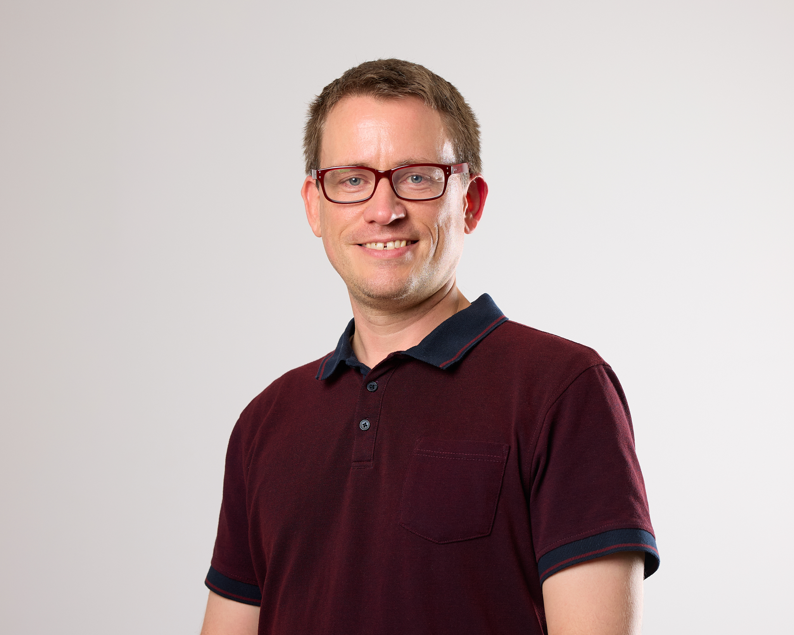
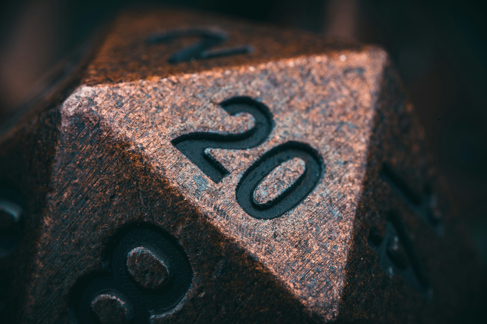
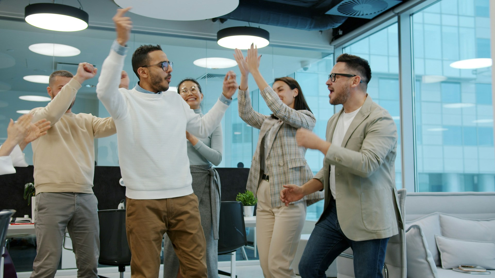
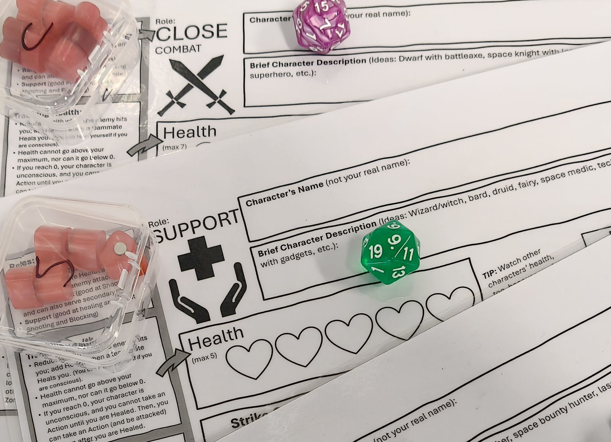

Step 01
Enter the collective imagination.
Players step into an imaginary realm together, leaving behind real-world hierarchies and pressures. The fantasy setting creates psychological safety, where it is safe to experiment with new behaviours.
A Roleplaying Game for Leadership and Team Development
What Is SkillRealms?
SkillRealms is a roleplaying game (like Dungeons & Dragons) designed for large groups or classes to practise and develop human-centric skills, like teamwork, collaboration, and communication.
The game deliberately takes place in an imaginary fantasy world, creating a liminal learning space that strips away real-world corporate contexts to foster psychological safety. Unlike traditional business simulations that rely on competitive mechanics or direct workplace scenarios, SkillRealms sets itself apart through a purely collaborative, non-competitive framework grounded in theory and evidence from organisational behaviour.
The game explicitly highlights the importance of connection both within and across teams. In the future, SkillRealms will be facilitated by a web-based app that empowers instructors to easily run sessions for 20 to 100 (or even more) learners.
SkillRealms is developed by Associate Professor Jesse Olsen, with support from the InnovatEd Incubator Program (via the Melbourne Entrepreneurial Centre), the Department of Management and Marketing, and the Faculty of Business and Economics at the University of Melbourne.
How It Works
Step 01
Players step into an imaginary realm together, leaving behind real-world hierarchies and pressures. The fantasy setting creates psychological safety, where it is safe to experiment with new behaviours.
Step 02
Players experiment with new behaviours and build connections both within and across teams. The game is designed to work with 12 to 100 or more learners in a single session.
Step 03
Unlike traditional business simulations, SkillRealms is purely collaborative. Teams work together toward shared goals, mirroring the kind of teamwork that actually matters at work but that we rarely ever practice.
Step 04
Structured debriefing sessions translate in-game actions into real-world professional capabilities, turning play into lasting, evidence-based learning outcomes.

About the Creator
Associate Professor of Management · Founder & Chief Game Master
Jesse Olsen is an Associate Professor of Management in the Department of Management and Marketing at the University of Melbourne. He earned his PhD in Organisational Behavior from the Scheller College of Business at the Georgia Institute of Technology (Atlanta, USA).
His research focuses on hobbies and leisure at work, improvisation in organisations, diversity and inclusion, international and cross-cultural management, and leadership. For both his teaching and research, Jesse has been exploring the applicability of hobbies and personal activities to work and the workplace, with particular interest in Dungeons & Dragons and other tabletop roleplaying games.
Jesse's work has been presented in such top-tier management publications as the Journal of Applied Psychology, Harvard Business Review, and Organizational Behavior and Human Decision Processes, and has been featured in media outlets including the BBC, SBS World News, The Guardian, Forbes, and The Conversation.
He has worked with organisations such as Perpetual, the Australian Workplace Gender Equality Agency, McDonald's, the Queensland Government, the Asian Development Bank, and HDFC Insurance. Jesse has also received improvisation and comedy writing training from the Laugh Masters Academy (Melbourne) and Second City (Chicago).
Research & Writing
Jesse's work sits at the intersection of games, learning, and organisational behaviour. Here are some highlights.
Harvard Business Review · 2024
Jesse's research on how games — including tabletop roleplaying games — build real professional skills, published in one of the world's leading management journals.
Read on HBRPursuit · University of Melbourne
An accessible deep-dive into the research behind using D&D and tabletop roleplaying as a vehicle for developing teamwork, empathy, and collaboration skills.
Read on PursuitGame-Based Learning Nerds
Jesse co-runs the Game-Based Learning Nerds site at the University of Melbourne, a hub for research, resources, and ideas at the intersection of games and education.
Visit GBLNAs featured in
Get Involved
If you are keen to teach or train human-centric skills (like teamwork, collaboration, decision-making, or empathy) in your classroom, workshop, or training session, get in touch. The current version of SkillRealms is ready to play, and we are keen to lead a game and debrief session for your students, trainees, or staff.


